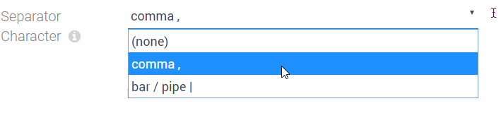
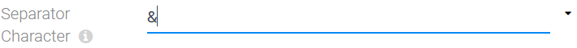

Field Input-Type string-dropdown
Use this field type for configuring simple dropdown UI elements, storing string/text data. It's an extension of the string field type.
Features
- provide values to select
- provide visible labels which are different from the stored value
- optionally allow users to type in something different
- choose between value-label and label-value ordering (2sxc 12.04)
- allow the use of
:in values (just escape as\:)
Special Behavior
- When the drop-down UI element finds data stored, which doesn't match any of the values it has available, it will leave that data intact unless the users selects something manually
Configuring a String-Dropdown
This shows the configuration dialog:

Using the Dropdown with the optional free-text-entry (2sxc 9.10)
This is what the UI looks like, if Enable Free Text is enabled
If the user then clicks on the I-bar icon (TT in v11+), the input will change to text so you could type something different - like a value which wasn't suggested, or a token.
History
- Introduced in EAV 2.0 2sxc 2.0, originally as part of the string field type
- Changed in 2sxc 6.0 - Moved to it's own sub-type
- Enhanced in 2sxc 9.10 - definition moved to json-based and added feature for enabling manual text entry
- New option to reverse order of keys/labels. This version also allows escaping the
:with\: